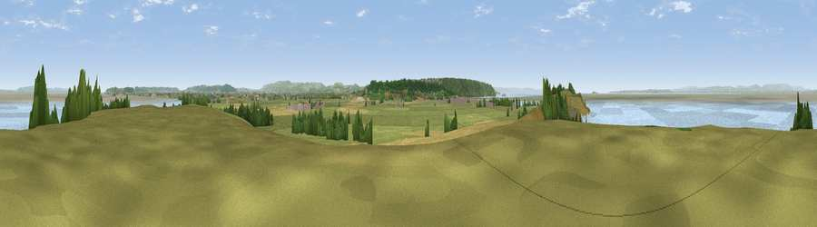

Viewpoint near Worle
#6774 in England · top 15% of its area beats it · near WorleWhere it is
The exact computed spot (ST 34112 66550). Click the marker for map links.
The view, rendered

A 360° render of this exact spot computed from the terrain model, tree cover and land cover — summer colours, afternoon light, calibrated against photographs of famous viewpoints. Real trees, hedges and buildings will differ in detail.
The panorama
Grey silhouette: terrain skyline in each direction (720 bearings, Earth curvature and refraction included). Dashed green: skyline with trees (+15 m) and buildings (+8 m) as obstacles. Blue strip: how far the ground is visible on each bearing.
Where the view opens
Wedge length = distance to the farthest visible ground on that bearing (vegetation-aware). Rings at 10, 25 and 50 km.
What fills the view
53% water · 30% grassland · 8% cropland · 7% woodland · 1% built-up
Angular shares of the visible panorama (visual magnitude), not map area. Landscape diversity 0.50 (0–1 Shannon).
Key numbers
More beautiful places nearby
The staircase of upgrades: each row has a higher view potential than everything closer. Driving times are estimates from straight-line distance, calibrated against real road routing — check an actual route before setting out.
| Place | Direction | Drive | Score |
|---|---|---|---|
| Middle Hope | WSW · 2 km | ~4 min | 72.2 |
| Viewpoint near Weston-super-Mare | SSW · 5 km | ~11 min | 73.9 |
| Viewpoint near Bleadon | S · 9 km | ~17 min | 77.7 |
| Bleadon Hill [Loxton Hill] | SSE · 10 km | ~19 min | 79.6 |
| Viewpoint near East Quantoxhead | SW · 32 km | ~50 min | 83.1 |
| Viewpoint near West Quantoxhead | SW · 32 km | ~50 min | 87.9 |
| Viewpoint near West Quantoxhead | SW · 33 km | ~51 min | 88.7 |
| Holdstone Hill | WSW · 74 km | ~98 min | 90.2 |
51.39414, -2.94839 · source: screening · position refined by local search. Computed location — check access rights before visiting.